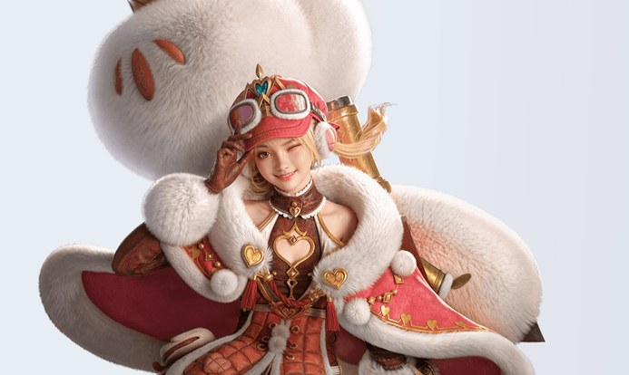
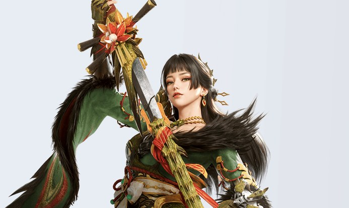
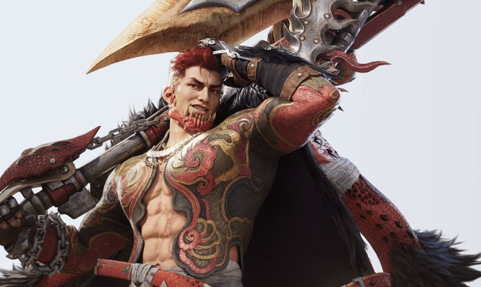

몬스터헌터 아웃랜더스 초보 무기 추천, 처음엔 이 3개로 시작해요
몬스터헌터 아웃랜더스를 이제 막 시작하려는데 무기가 8종이나 된다니, 뭘 골라야 할지 막막하시죠. 공식 홈페이지의 캐릭터 소개와 게임위드 한국어 가이드, game8의 무기 평가를 모아 놓고 '처음엔 뭘로 시작하면 덜 헤매나'만 추려 봤어요. 결론부터 말씀드리면 헤비보우건, 태도, 대검 세 가지가 가장 무난한 출발점이에요. 다만 순위는 사이트마다 갈려서, 여러 곳에서 '쉬운 편'이라고 겹쳐 말하는 무기를 골랐어요. 티어와 점수는 게임위드 한국어 가이드·game8·Destructoid 같은 해외·번역 평가를 따른 거라, 참고용으로만 봐 주세요.
몬스터헌터 아웃랜더스 초보자는 무기를 뭐로 시작하면 좋을까요?
초보자에게는 거리를 두고 싸우는 헤비보우건, 공격을 받아내 반격하는 태도, 한 방이 시원한 대검 순서로 시작해 보시길 추천드려요. 같은 무기를 두고도 평가가 꽤 달라서, 게임위드 한국어 가이드의 주인공 기준 티어는 헤비보우건이 SS이고 대검·태도·랜스가 A인데, Destructoid는 태도를 S, 헤비보우건을 A로 매겼거든요. 그래서 1등 하나를 못 박기보다 '다루기 쉽다'는 말이 여러 곳에서 겹치는 쪽을 골랐어요.
헤비보우건, 거리를 두고 안전하게
헤비보우건은 멀리서 탄을 바꿔 가며 쏘는 무기예요. 게임위드 한국어 가이드는 '조작도 비교적 쉬워 초보자도 다루기 쉽다'고 적었고, game8도 편의 항목에 5점 만점을 줬어요. 저스트 가드에 성공하면 자동으로 장전돼요(게임위드). 다만 탄마다 특성이 달라서 처음엔 익힐 게 있어요. 공식 홈페이지 기준으로 이 무기를 쓰는 모험가는 교란형 페페 한 명이네요.

헤비보우건을 쓰는 모험가 페페예요
출처: 몬스터헌터 아웃랜더스 공식 홈페이지
태도, 받아내고 되받아치는 맛
태도는 연기 게이지 단계를 올려 화력을 만들고, 상대 공격을 받아낸 뒤 반격하는 무기예요. 진입장벽이 낮고 패링 판정이 후한 편이라는 게 game8의 설명이고, Destructoid도 가장 쉽게 익힐 수 있는 무기 중 하나로 꼽았어요. 다만 연기 게이지 단계를 올려야 제 화력이 나오니, 공격 버튼만 누르면 끝나는 무기는 아니에요. 쓰는 모험가는 돌격형 미도리와 지원형 류노스케예요.

태도를 쓰는 모험가 미도리예요
출처: 몬스터헌터 아웃랜더스 공식 홈페이지
대검, 모아서 한 방
대검은 화력이 가장 높은 쪽이고, 모으기를 3단계까지 쌓아 큰 한 방을 노리는 무기예요. game8은 편의 항목에 5점 만점 중 4점을 줬고, Destructoid는 학습 곡선이 있다고 적었어요. 발도 중에는 느리고 모으는 동안 빈틈이 커서 태클과 회피를 섞어 쓰는 편이 좋아요(게임위드). 쓰는 모험가는 교란형 브릭스와 돌격형 엔쇼우예요.

대검을 쓰는 모험가 엔쇼우예요
출처: 몬스터헌터 아웃랜더스 공식 홈페이지
이럴 땐 이 무기
· 몬스터가 아직 무섭다면 헤비보우건이에요. 멀리서 쏘는 무기라서 부딪힐 일이 적어요.
· 받아치는 재미가 좋다면 태도가 맞아요. 공격을 받아내고 반격하는 구조거든요.
· 시원하게 한 방이 좋다면 대검이에요. 모으기로 화력을 쌓아 터뜨려요.
무기는 내가 고르는 건가요, 주인공만 8종을 다 쓰나요?
8종 무기를 전부 쓰는 건 주인공 모험가뿐이고, 나머지 모험가는 쓰는 무기가 한 종류로 정해져 있어요. 그래서 '무기를 고른다'는 건 사실 주인공에게 어떤 무기를 쥐여 줄지, 그리고 어떤 모험가를 키울지를 함께 정하는 일이에요.
- 공식 홈페이지 캐릭터 소개 13명은 모두 무기가 한 종류씩 정해져 있어요.
- 차지액스를 쓰는 모험가는 13명 가운데 없고, game8과 Destructoid도 차지액스는 주인공만 쓴다고 적었어요.
- 게임위드 한국어 가이드는 주인공이 처음부터 모든 무기 종류를 갖고 있고, 장비 화면에서 무기를 눌러 언제든 바꿀 수 있다고 설명해요.
마지막 줄은 게임위드 한국어 가이드 기준이에요. 공식 패치노트에도 '주인공 모험가(헤비보우건)', '주인공 모험가(해머)'처럼 무기별로 나눠 적은 표기가 있어서, 주인공이 여러 무기를 쓰는 구조와 맞아요. 실제 전환은 인게임 장비 화면에서 확인해 보세요.
확인 위치: 인게임 장비 화면 · 확인되면 이 박스를 문장으로 바꿔 주세요.
조작이 걱정된다면 스타팅 모드
스타팅 모드는 공격·회피·필살 3버튼만 쓰고 콤보가 자동으로 이어지는 조작 방식이에요. 게임위드 조작 가이드가 초보자용으로 소개했고, 반대편인 클래식 모드는 버튼 6개를 직접 눌러야 해서 중급자 이상에게 맞는다고 해요. 설정의 모드 항목이나 조작 탭에서 바꿀 수 있고, '스타팅 모드'라는 이름은 공식 패치노트에도 나와요.
몬스터헌터 아웃랜더스 무기 8종, 한눈에 비교하면 어떤가요?
무기 8종은 거리를 두는 헤비보우건·활과 가까이 붙는 나머지 6종으로 나뉘고, 쓰는 모험가는 공식 홈페이지 캐릭터 소개 기준이에요. 특징은 게임위드 한국어 가이드와 game8의 설명을 줄인 것이고, 점수는 뺐어요.
| 무기 | 쓰는 모험가 | 특징(게임위드·game8 설명) |
|---|---|---|
| 대검 | 브릭스·엔쇼우 | 화력이 가장 높고 모으기가 3단계예요. 모으는 동안 빈틈이 커요. |
| 태도 | 미도리·류노스케 | 연기 게이지를 올려 화력을 내고, 받아내 반격해요. 패링 판정이 후하다는 평가예요. |
| 쌍검 | 헤이즈·케레스·라야 | 움직임이 빠르고 공격 횟수가 많아요. 리치가 짧고 가드가 없다고 해요. |
| 해머 | 로드 | 머리를 노려 때리고 느린 편이에요. game8 해머 설명에서는 기절을 줄 수 있는 유일한 무기라고 해요. |
| 랜스 | 아케니아·폴리오 | 가드가 가장 든든해요. 반격은 타이밍이 필요하고, 파티로 싸울 때 더 어렵다는 설명이 있어요. |
| 헤비보우건 | 페페 | 거리를 두고 탄을 바꿔 쏴요. 탄마다 특성이 달라 이해가 필요해요. |
| 아이콘 없음차지액스 | 없음(주인공만) | 검 모드와 도끼 모드를 오가요. game8은 학습 곡선이 가장 가파르다고 평가해요. |
| 활 | 루카·매들린 | 스텝 사격과 저스트 회피 뒤에 관통 공격을 해요. 스태미나 관리가 필수예요. |
무기 아이콘 출처: 몬스터헌터 아웃랜더스 공식 홈페이지 (차지액스는 공식 아이콘이 없어요)
차지액스·랜스·해머는 왜 나중에 해 보라고 하나요?
차지액스·랜스·해머는 약해서가 아니라 초반에는 손이 많이 가는 무기라서 나중으로 미루길 권해요. 이 세 무기는 설명 자체가 '익숙해지면 강하다' 쪽으로 쓰여 있어요.
- 차지액스는 검 모드와 도끼 모드를 번갈아 써야 해서 game8이 가장 가파른 학습 곡선으로 꼽았고, 주인공만 쓸 수 있어요.
- 랜스는 가드가 든든한 대신 반격 타이밍이 까다로워요. game8은 효율 내기가 가장 어렵다고 했고, 게임위드는 모험가가 여럿이면 타깃이 분산돼 더 어렵다고 해요.
- 해머는 머리를 노려야 하고 동작이 느려요. game8에는 모으는 중에 맞으면 초기화된다는 설명이 있어요. 대신 같은 설명에서 기절을 줄 수 있는 무기로 꼽혀요.
쌍검과 활은 위 셋만큼 어렵다는 말은 없지만, 둘 다 스태미나를 챙겨야 한다는 설명이 붙어 있어서 첫 무기보다는 두 번째 무기로 보는 쪽이 편해요.
자주 묻는 질문
Q. 헤비보우건이 하향됐다던데 지금도 괜찮나요?
game8 헤비보우건 항목에 스티키 탄의 기절 누적이 하향됐다는 언급이 있고, Destructoid도 베타 이후 하향으로 약해졌다며 A 티어로 봤어요. 한국 공식 패치도 11월 들어 여러 번 있었고 주인공 모험가의 깨달음과 튜토리얼이 계속 손봐지는 중이라, 밸런스는 앞으로도 바뀔 수 있어요.
Q. 주인공의 '깨달음'이 뭔가요?
공식 패치노트에 '주인공 모험가(헤비보우건)의 깨달음 숙련된 건너', '주인공 모험가(해머)의 깨달음 노도의 내려치기'처럼 무기별 이름이 나와요. game8은 주인공의 깨달음을 얻으려면 시련 원정을 해야 한다고 적었고, 게임위드에는 무기별 깨달음 목록이 따로 정리돼 있어요.
Q. 뽑기를 다시 돌려서 좋은 모험가부터 만들어야 하나요?
게임위드 한국어 가이드는 주인공의 기본 성능이 공략에 충분하고 무기 종류와 오의도 바꿀 수 있어 활용도가 높다고 적었어요. 그래서 리세마라 없이도 시작은 무리가 없다는 쪽이에요.
Q. 무기는 언제부터 만들 수 있나요?
게임위드는 써 보기만 할 때는 생산할 필요가 없다고 설명해요. 무기 생산이 열리는 장은 가이드마다 말이 조금 달라서, 초반 장을 진행하는 중에 열린다고만 보시면 돼요. 게임위드 초보자 가이드 기준으로 3장까지는 최소 강화로 가능하고, 4장부터 장비를 고르게 올려야 한다고 해요.
몬스터헌터 아웃랜더스 초보 무기 정리
처음 무기가 고민이라면 헤비보우건이나 태도로 감을 잡고, 한 방이 끌리면 대검으로 넘어가 보시길 추천드립니다. 주인공은 무기를 바꿀 수 있다고 하니(게임위드 기준) 손에 안 맞으면 갈아타면 되고요. 평가는 패치로 달라질 수 있어요. 즐겁게 사냥 달려 봅시다~
참고한 곳 (2026.11.12 기준)
· 몬스터헌터 아웃랜더스 공식 홈페이지(캐릭터 소개)
· 몬스터헌터 아웃랜더스 공식 라운지 패치노트(주인공 깨달음)
· 몬스터헌터 아웃랜더스 공식 라운지 패치노트(스타팅 모드)